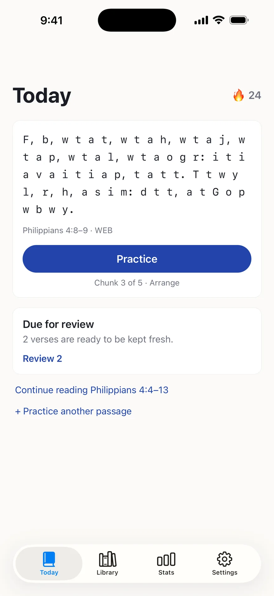
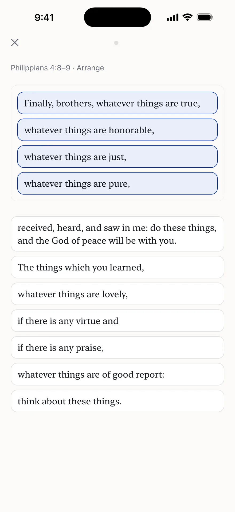
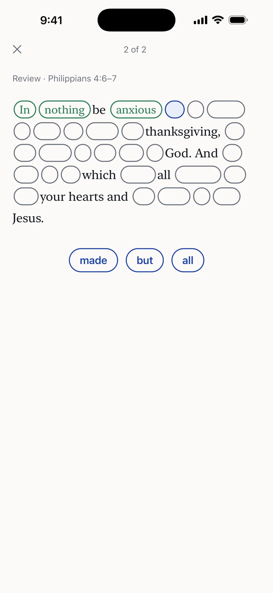
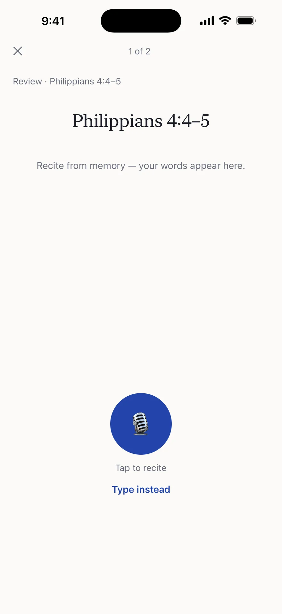
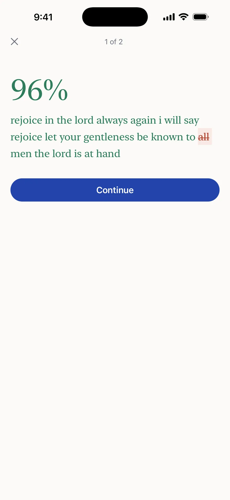
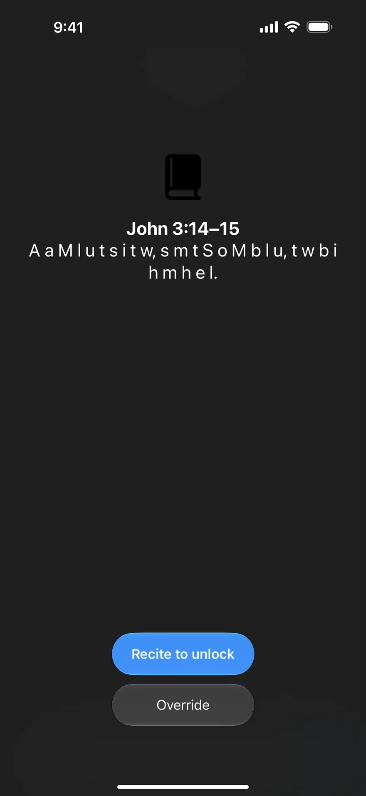
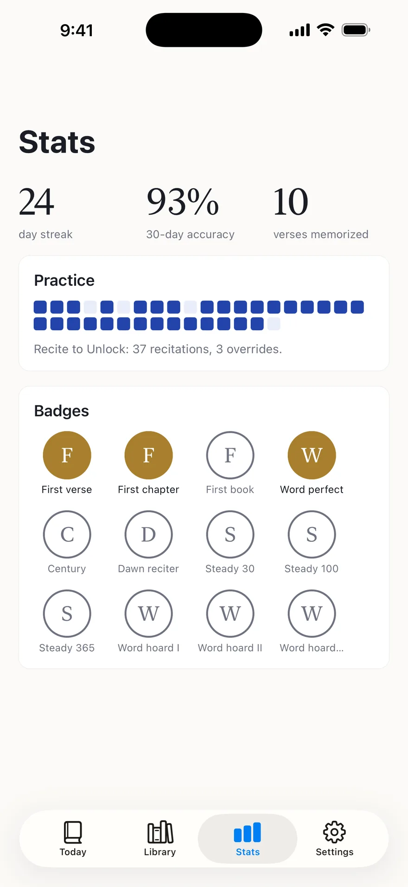
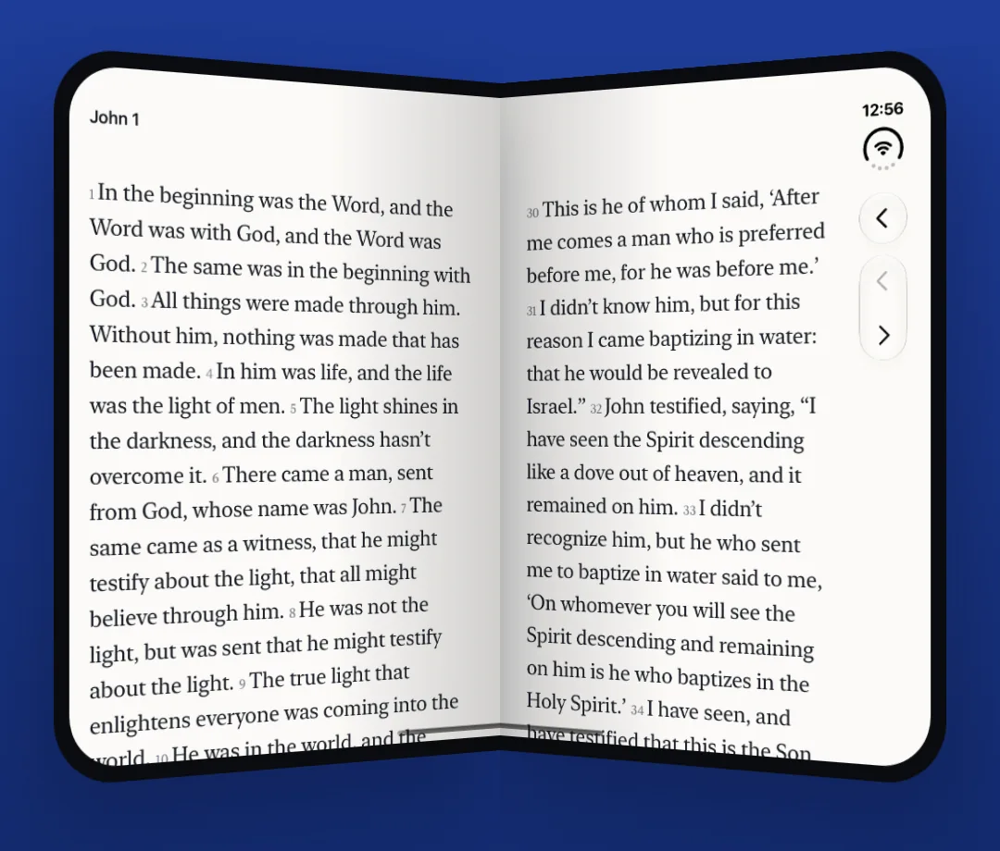

Scripture memory for iPhone
Let the Word remain in you.
Memorize Scripture a few minutes a day — and keep it for good.
Free · No account · Works offline

The idea
Watch it fade as it takes root.
As a verse settles into memory, its text dissolves from the screen — full words, then first letters, then just the reference. It lives in you, not the app.
Remain in me, and I in you. As the branch can’t bear fruit by itself unless it remains in the vine, so neither can you, unless you remain in me.
John 15:4 · WEBR i m, a I i y. A t b c b f b i u i r i t v, s n c y, u y r i m.
John 15:4 · WEBJohn 15:4
Kept fresh with spaced reviewsPractice
Six ways to practice.
Pick a passage — a verse, a psalm, or whole chapters. Meno breaks it into day-sized pieces and walks each one up a ladder of modes.
- ReadSettle into the words.
- First lettersRecite from a letter cipher.
- Fill in the blanks25%, 50%, then 75% of the words removed.
- ArrangeRebuild the passage from shuffled phrases.
- TypeWrite it out from memory.
- SpeakRecite it aloud, checked on your device.



Feedback
Checked word by word.
Speak or type from memory. Meno marks exactly what slipped — a 96% with one word struck through, not a vague “try again”.
Recitation audio is recognized on your iPhone and never leaves it. No recording, no upload.

Recite to unlock
Recite before you scroll.
Choose the apps you’d rather open less. Meno asks for your current verse before they open.
It’s a door, not a wall: Override always works, instantly, no questions asked. And Apple’s Screen Time framework keeps the apps you pick private — even from Meno.

Widgets
Keep it in front of you.
Home Screen and Lock Screen widgets show your verse at its current level of dissolution, with your streak and what’s due.
Keep it
Faithful, day by day.
Memorized verses come back for spaced reviews right before you’d forget them. Pop quizzes arrive out of the blue — never more than two a day, never at night.
Stitch sessions ask for everything so far as one passage, so chapters hold together, not just fragments.

iPhone Duo
Half-open, it reads like a book.
On iPhone Duo the reader becomes two facing pages and the crease stays clear. Every screen reflows for the inner display.

Memorize together
Share any passage as a challenge link. A friend taps it and gets the same goal, same target date, on their own phone.
Four translations
World English Bible, King James and American Standard are built in and work fully offline. The ESV® is fetched once per passage and kept on your phone, used by permission of Crossway.
Quietly yours
No account. No ads. No tracking. Your goals, progress and recitations stay on your phone; the only thing Meno ever sends is an anonymous crash report.
μένω
menō — to remain, to abide.
“If you remain in me, and my words remain in you, you will ask whatever you desire, and it will be done for you.” John 15:7 · World English Bible
Free on the App Store · iPhone · iOS 16.4 or later